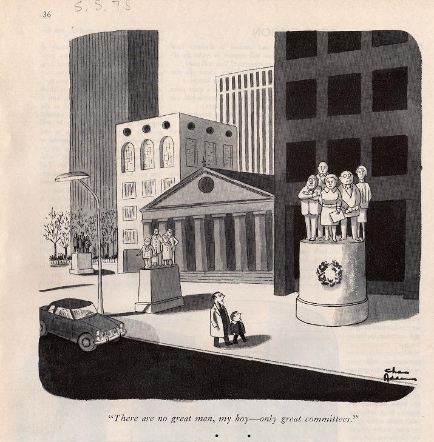

2nd International Workshop on Computational Social Choice
Liverpool, 3-5 September 2008
Introduction
Invited Speakers
Tutorials on Sept 2nd
Program, Sept 3rd-5th
Proceedings, slides and photos
Committees
Call for Papers
Paper Submission
Important Dates
Registration
Location
Travel and Accommodation
COMSOC-2006
Contact
Programme Committee
Felix Brandt
Vincent Conitzer
Edith Elkind
Ulle Endriss
(co-chair)
Paul Goldberg
(co-chair)
Lane Hemaspaandra
Sébastien Konieczny
Jérôme Lang
Christian List
Vangelis Markakis
Vahab Mirrokni
Gabriella Pigozzi
Francesca Rossi
Remzi Sanver
Arkadii Slinko
Michael Trick
Berthold Vöcking
William S. Zwicker
Local Organising Committee
Wiebe van der Hoek
Peter McBurney
Michael Wooldridge
